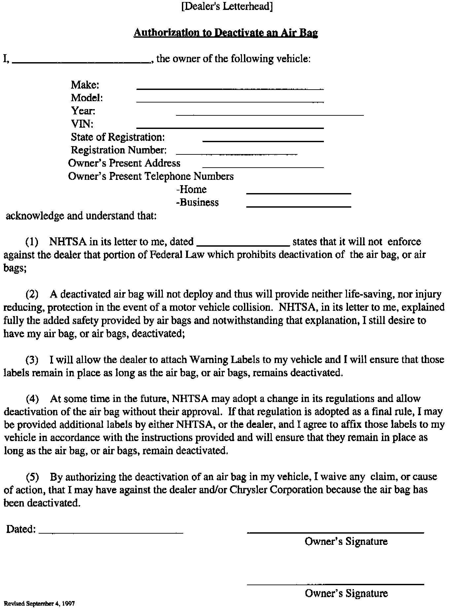
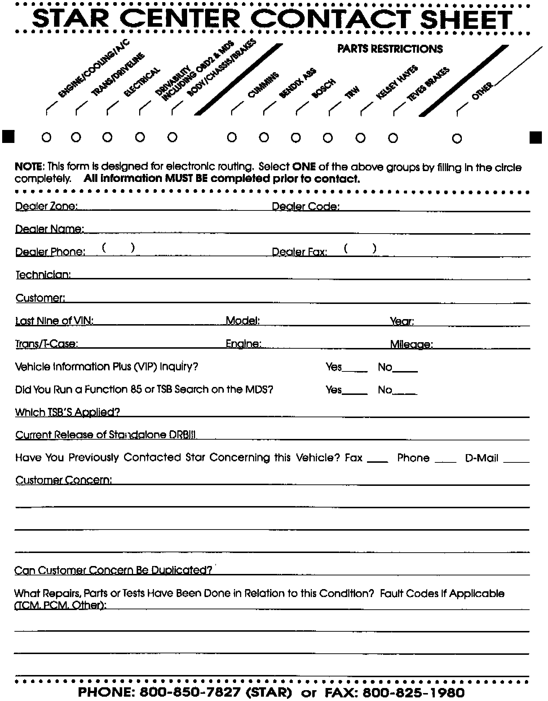

Airbag - NHTSA Authorized Deactivation: Overview
NO: 08-32-97GROUP: Electrical
DATE: Sep. 19, 1997
SUBJECT:
NHTSA Authorized Airbag Deactivation For Medical Necessity
MODELS:
1990 - 1995 (AA) Spirit/Acclaim/LeBaron Sedan
1995 - 1998 (AB) Ram Van/Wagon
1990 - 1993 (AC) Dynasty/New Yorker/New Yorker Salon
1988 - 1993 (AG) Daytona
1988 - 1995 (AJ) LeBaron Coupe/LeBaron Convertible
1990 (AL) Horizon/Omni
1988 - 1989 (AM) Diplomat/Gran Fury/Fifth Avenue
1994 - 1998 (AN) Dakota
1990 - 1994 (AP) Shadow/Shadow Convertible/Sundance
1990 - 1991 (AQ) Chrysler Maserati TC
1991 - 1995 (AS) Town & Country/Caravan/Voyager
1990 - 1993 (AY) Imperial/New Yorker Fifth Avenue
1994 - 1998 (BR/BE) Ram Truck
1998 (DN) Durango
1991 - 1995 (ES) Chrysler Voyager (European Market)
1996 - 1998 (GS) Chrysler Voyager (European Market)
1995 - 1998 (JA) Cirrus/Stratus/Breeze
1996 - 1998 (JX) Sebring Convertible
1993 - 1998 (LH) Concorde/Intrepid/LHS/New Yorker/Vision
1996 - 1998 (NS) Town & Country/Caravan/Voyager
1995 - 1998 (PL) Neon
1997 (PR) Prowler
1996 - 1998 (SR) Viper/Viper Coupe
1997 - 1998 (TJ) Wrangler
1995 - 1998 (XJ) Cherokee
1993 - 1998 (ZG) Grand Cherokee
1993 - 1998 (ZJ) Grand Cherokee
NOTE:
THIS BULLETIN IS PROVIDED TO IDENTIFY THE PARTS AND PROCEDURES NECESSARY TO DEACTIVATE AIRBAGS AUTHORIZED BY NHTSA. AIRBAG DEACTIVATION IS A CUSTOMER PAY PROCEDURE, NOT COVERED UNDER THE PROVISIONS OF THE WARRANTY.
AFTER PERFORMING THE AIRBAG DEACTIVATION PROCEDURE ON SOME VEHICLES THE AIRBAG WARNING LIGHT WILL REMAIN ON (SEE INSTRUCTION SHEET). CUSTOMERS SHOULD BE TOLD THIS PRIOR TO DEACTIVATION.
IN THE UNIQUE CASE WHERE THE LAMP REMAINS ON WITH A DEACTIVATED DRIVER AIRBAG, AND THE PASSENGER AIRBAG REMAINS ACTIVATED, THE TELLTALE FUNCTION OF THE AIRBAG WARNING LIGHT WILL BE DEFEATED, i.e. SYSTEM FAULTS WILL NOT BE REPORTED (BECAUSE LAMP IS ALWAYS ON).
DISCUSSION:
The National Highway Traffic Safety Administration (NHTSA) has begun and will be authorizing some vehicle owners individually, in writing, permission to have one, the other or both of their airbags deactivated for medical necessity.
Owners authorized by NHTSA to have their airbag(s) deactivated will have a letter to that effect. Only those owners with an NHTSA letter can be considered for airbag deactivation at this time until further notice.
To deactivate and document the airbag deactivation, the following procedure must be adhered to:

1. THE OWNERS MUST: produce a letter from NHTSA authorizing deactivation; verify vehicle ownership; and sign a copy of the waiver (reproduced on the Dealer's letterhead) provided with this bulletin.

2. The Dealer then faxes a copy of the NHTSA letter and the signed waiver to the Star Center using the STAR CENTER FAX FORM, marked "Electrical Group", provided with this bulletin.
3. The Star Center will order the appropriate kit and have it shipped to the dealership.
4. The Star Center will telefax the NHTSA letter and signed waiver to the Chrysler Customer Call Center and Office of the General Council for their records.
5. The dealer must retain the original copies of the NHTSA authorization and the signed waiver in his files for a minimum of 5 years.
6. Report the airbag deactivation on the DIAL system by using the VIP Options Update function using the following procedure:
a. Download the VIN in the normal fashion.
b. Select the F3 key from the VIP Vehicle Summary screen to get to the Option Update menu.
c. If there were no dealer installed options previously reported on the vehicle, a dropdown list will be automatically displayed. If there were codes previously added, those codes will be displayed. If there were codes previously added, those codes will be displayed first. To get to the options list select the F3 key.
d. Select the appropriate sales code(s):
4ED = Driver Airbag Deactivated
4EE = Passenger Airbag Deactivated
e. Confirm the sales code selection(s) by pressing the F10 key.
f. To report the reactivation of airbag(s) follow steps a - e, substitute the sales code(s) with either of the following:
4EF = Driver Airbag Reactivated
4EG = Passenger Airbag Reactivated
VIP will display "WARNING MESSAGES" anytime an airbag has been reported as being deactivated. To view these messages select the F4 key from the VIP VEHICLE SUMMARY screen. The message will indicate which airbag has been deactivated.
NOTE:
ALL DEALER OWNED USED VEHICLES SHOULD BE INSPECTED FOR PROPER AIRBAG OPERATION, i.e. NOT DEACTIVATED, PRIOR TO RESALE.
NOTE:
THE PROCEDURES SET BY THE NATIONAL HIGHWAY TRAFFIC SAFETY ADMINISTRATION (NHTSA), A U.S. AGENCY, DO NOT APPLY TO VEHICLES IN CANADA. SHOULD A SIMILAR PROGRAM BE INITIATED IN CANADA, CANADIAN DEALERS WILL BE NOTIFIED AT A LATER DATE.
POLICY: Information Only
Attach: Waiver Form
STAR Center Fax Form
Instruction Sheet